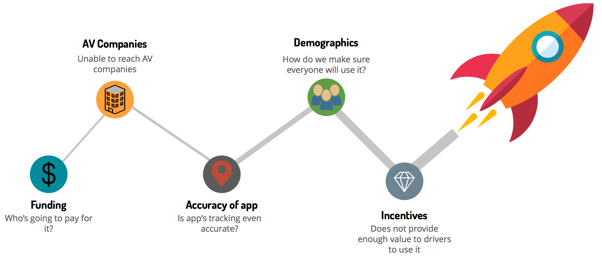
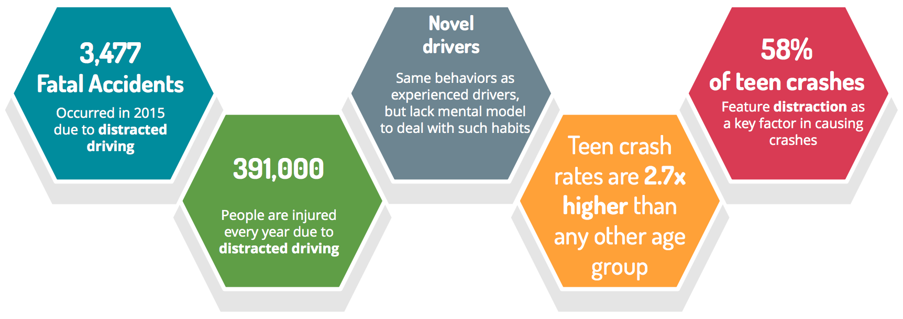
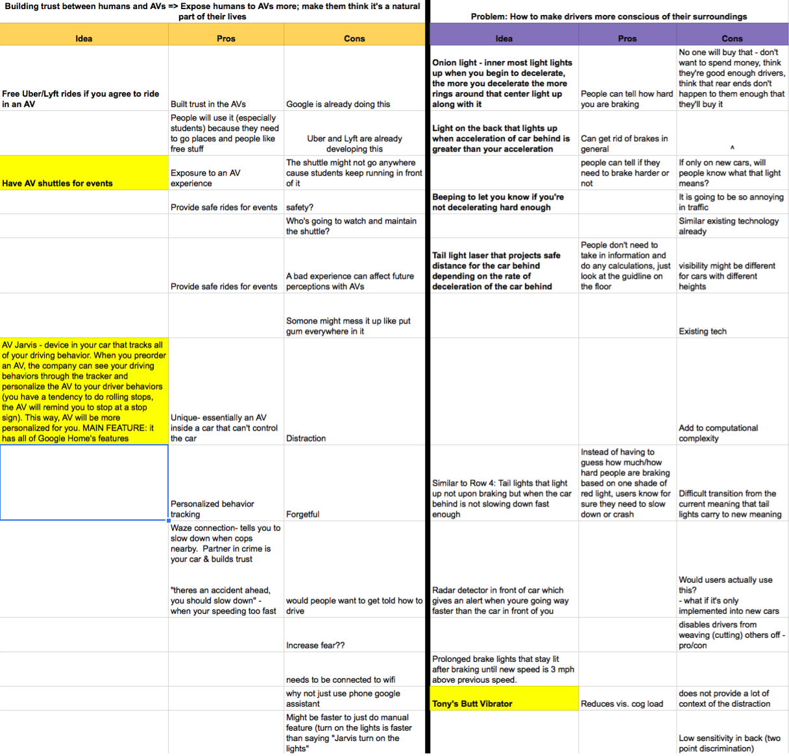
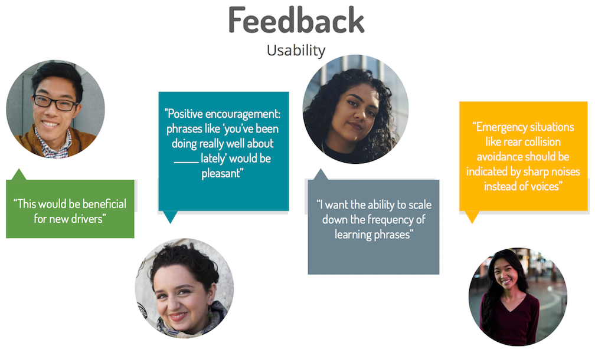
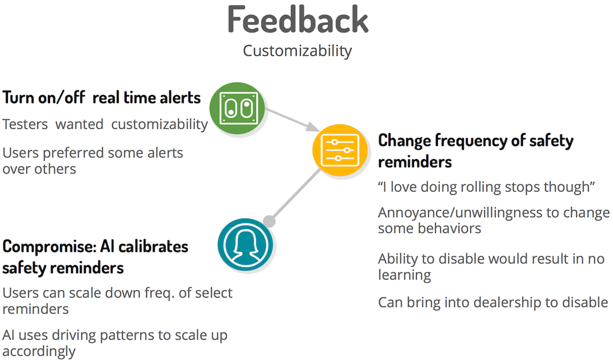

Main critiques after the D4SD competition:
- feasibility
- marketing cost
- funding
- user demographic representation
- consumer motivation
- enterprise motivation
- accuracy & consistency of data
Our team highlighted a problem that would occur with the introduction of AVs; however, we were unable to clearly provide a solution that encompasses our problem statement: “How can we better facilitate communication between human drivers and AVs.”
Feedback from D4SD Judges

We went back to the need finding phase and researched more on the
current breakdowns. Our hearts were still attached to MEA and we didn’t want to completely abandon the
topic of AV accidents yet. We found that California’s DMV had recorded
all AV related accidents within the past 3 years. After reading through all the reports, we found an
interesting fact: a majority of accidents are either rear end or left-turn related.
After looking through numerous articles and studies we realized that rear ends belonged to a
much bigger and more dangerous story: distracted driving. Every year, over 391,000 people are injured due
to distracted driving. In 2015
alone, there were 3,477 accidents from distracted driving.
When looking into distracted driving, we
found that both
novel and experienced drivers perform the same behavior
while driving (such as texting, talking on the phone, and eating).
Distraction is a key factor in 68% of teen crashes.
In a study done by Geoffrey Underwood (2014), after conducting an eye tracking experiment on both novel and experienced drivers, he discovered that new drivers have not developed the necessary mental models to deal with such habits while driving. As a result, teen crash rates are a lot higher than any other group.
Statistics
We were able to assign the causes of most accidents into 3 main reasons: Distracted driving, bad habits, cognitive overload. With this in mind, we decided on a new problem statement:
“How can we encourage active driving depending on specific driver habits?”
We began generating new ideas that focused on utilizing different senses and modalities to encourage active driving. We created excel sheets to analyze the pros and cons of each idea.
Ideation: Phase 2

Onion Light Prototype

We wanted to quickly see if people would understand the meaning behind the new light. We showed the different states and animation to students around campus and asked “what do you think the lights communicate?” and “what purpose does it serve?” To our surprise, most of them responded that they were not sure if it had to do with braking, signaling, or something else. Some also related it to emergency lights which is very far from what we were trying to communicate. Around the same time, we also found out that modifying brake lights and graduated brake lights are actually illegal in most of North America.
Vibrating Seat Prototype

We tested the prototype on 15
users to see if
if people could actually distinguish between the different vibrations quickly enough, remember what they
mean, and carry out the appropriate response. Across the board, users agreed
that it was too difficult to distinguish between the vibrations on different parts of the back while
driving; however, they could distinguish the vibrations accurately while parked though.
This may have meant
that it took a lot of effort to keep track of different senses while driving. Many users
also said that they found the vibrations distracting
After testing visual and tactile senses, we decided to
try audio. Inspired by Iron Man’s Jarvis, we came up with an auditory prototype that not only alerts
drivers of potential obstacles, but also acts as a teaching assistant to new drivers to enforce good
driving habits.
We discovered that there were two kinds of listening: passive and active. The main
example of active is when you are engaging in a conversation with someone. Active listening causes a
decrease in activation in the parietal
lobe — the brain region responsible for motor control. Research has shown that engaging in active
listening causes driver’s’ reaction times to increase by 13.84%.
Passive listening
includes listening to music or GPS commands and only increases your reaction time by 1.94%.
This meant that having an audio assistant in
your car could provide more contextual information about the road while minimizing distractions.
Audio Statistics

Pivoting Ideas

Stakeholders

Our main competitor was Microsoft’s Cortana: a digital assistant that
may be implemented into BMW and Nissan cars. The assistant is voice controlled, but could provide
suggestions to the driver without having to prompt it, such as detecting traffic and suggesting an
alternative route. Cortana is being marketed
as a virtual assistant that increases productivity by connecting drivers to their apps via an
auditory system. It doesn't try to help the driver improve their behaviors.
I've include some
more relevant competitors below.
The main point is that these competitors either focus on monitoring driving behaviors or limiting phone
usage. None of them try to actively teach good driving habits.
Competitive Analysis

Example Phrases
Usability Tests
Feedback
To increase customizability, the
AI system should adapt to different driving behaviors. Users wanted the option to turn
on/off specific phrases. We agreed that they should have the ability to do this for the real
time alerts; however, letting them enable/disable safety reminders would result in letting users abuse
certain violations, which wouldn't improve bad driving habits.
We decided to let users modify
the frequency of safety reminders,
but the AI will automatically
scale the frequency of the phrases back up depending on the severity and frequency of
the violation. The AI will also scale down the frequency of phrases if the driver shows
improvement.
Feedback on Customizability
Phrase Iteration
Since the users suggested an accompanying app
for data visualization, I designed one with Figma. Unfortunately, I lost the paper prototype that was used
for usability testing.
The main feedback was that users wanted the ability to see
the location of where they performed a specific violation. The paper prototype also had
multiple statistics tabs, which users found confusing. They suggested to have one statistics tab
which contained navigable sub tabs. Check out the interactive prototype below.
This has been the most challenging and rewarding
project that I’ve partaken in so far. It taught me how to manage a team effectively and forced me to use
everything I’ve learned about human centered design. If I could do one thing differently,
I would spend more time in the ideation phase and be more open to radical ideas, even if they seem less
feasible, because taking a slightly different angle at the same idea can change the outcome drastically.
Although we went through
many iterations to reach the final idea, we converged onto one solution too quickly and I feel that we
could’ve came up with more creative ideas. We were lost several times throughout the class, but trusted the design process
and eventually came up with a solution that we could be proud of.

EventQR
A web app that lets users create & scan events encrypted into a QR code, which can be synced onto their Google Calendar.
View Case Study
Birch Aquarium
Designing an exhibit in the Birch Aquarium at the Scripps Institution of Oceanography to teach people about bubbles.
View Case Study